GUJARI MAHAL
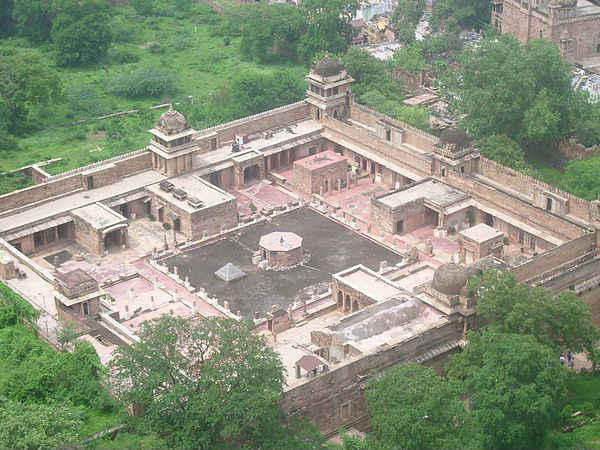
The Gujari Mahal Archeological Museum, sometimes called the "Gwalior Fort Museum", is a state museum in Gwalior, located in the fortress of Gujari Mahal, also orthographed Gujari Mahal. It displays numerous artifacts of the region, including a fragment of the Garuda capital of the Heliodorus pillar from Vidisha.
The palace of Gujari Mahal was built by Raja Man Singh Tomar for his wife Mrignayani, a Gujar princess. She demanded a separate palace for herself with a regular water supply through an aqueduct from the nearby Rai River.[citation needed] The palace has been converted into an archaeological museum. Rare artifacts at the museum include Hindu and Jain sculptures dated to the 1st and 2nd centuries BCE, miniature statue of Salabhanjika, terracotta items and replicas of frescoes seen in the Bagh Caves.
Gujari Mahal is an hill fort near Gwalior, Madhya Pradesh, central India. The fort has existed at least since the 10th century, and the inscriptions and monuments found within what is now the fort campus indicate that it may have existed as early as the beginning of the 6th century. The fort has been controlled by a number of different rulers in its history.
The present-day fort consists of a defensive structure and two main palaces, Gujari Mahal and Man Mandir, built by Man Singh Tomar (reigned 1486-1516 CE). The Gujari Mahal palace was built for Queen Mrignayani. It is now an archaeological museum. The second oldest record of "zero" in the world was found in a small temple, which is located on the way to the top. The inscription is around 1500 years old.
The exact period of Gwalior Fort's construction is not certain. According to a local legend, the fort was built by a local king named Suraj Sen in 3 CE. He was cured of leprosy, when a sage named Gwalipa offered him the water from a sacred pond, which now lies within the fort. The grateful king constructed a fort, and named it after the sage. The sage bestowed the title Pal ("protector") upon the king, and told him that the fort would remain in his family's possession, as long as they bear this title. 83 descendants of Suraj Sen Pal controlled the fort, but the 84th, named Tej Karan, lost it.
The inscriptions and monuments found within what is now the fort campus indicate that it may have existed as early as the beginning of the 6th century. A Gwalior inscription describes a sun temple built during the reign of the Huna emperor Mihirakula in 6th century. The Teli ka Mandir, now located within the fort, was built by the Gurjara-Pratiharas in the 9th century.
Historical records prove that the fort definitely existed in the 10th century. The Kachchhapaghatas controlled the fort at this time, most probably as feudatories of the Chandelas. From 11th century onwards, the Muslim dynasties attacked the fort several times. In 1022 CE, Mahmud of Ghazni besieged the fort for four days. According to Tabaqat-i-Akbari, he lifted the siege in return for a tribute of 35 elephants. The Ghurid general Qutb al-Din Aibak, who later became a ruler of the Delhi Sultanate, captured the fort in 1196 after a long siege. The Delhi Sultanate lost the fort for a short period before it was recaptured by Iltumish in 1232 CE.
In 1398, the fort came under the control of the Tomars. The most distinguished of the Tomar rulers was Maan Singh, who commissioned several monuments within the fort. The Delhi Sultan Sikander Lodi tried to capture the fort in 1505 but was unsuccessful. Another attack, by his son Ibrahim Lodi in 1516, resulted in Maan Singh's death. The Tomars ultimately surrendered the fort to the Delhi Sultanate after a year-long siege.
Within a decade, the Mughal emperor Babur captured the fort from the Delhi Sultanate. The Mughals lost the fort to Sher Shah Suri in 1542, but Babur's grandson Akbar recaptured it in 1558. Akbar made the fort a prison for political prisoners. For example, Abul-Kasim, son of Kamran and Akbar's first cousin was held and executed at the fort. Aurangzeb's brother, Murad and nephews Suleman and Sepher Shikoh were also executed at the fort. The killings took place in the Man Mandir palace.
After the death of the Mughal emperor Aurangzeb, the Rana chieftains of Gohad held the Gwalior Fort. The Maratha general Mahadaji Shinde (Scindia) captured the fort from the Gohad Rana Chhatar Singh, but soon lost it to the British East India Company. On August 3, 1780, a Company force under Captains Popham and Bruce captured the fort in a daring nighttime raid, scaling the walls with 12 grenadiers and 30 sepoys. Both sides suffered fewer than 20 wounded total. In 1780, the British governor Warren Hastings restored the fort to the Ranas of Gohad. The Marathas recaptured the fort four years later, and this time the British did not intervene because the Ranas of Gohad had become hostile to them. Daulat Rao Sindhia lost the fort to the British during the Second Anglo-Maratha War.
There were frequent changes in the control of the fort between the Scindias and the British between 1808 and 1844. In January 1844, after the battle of Maharajpur, the fort was occupied by the Gwalior State of the Maratha Scindia family, as protectorate of the British government. During the 1857 uprising, around 6500 sepoys stationed at Gwalior rebelled against the Company rule, although the Company's vassal ruler Jayaji Scindia remained loyal to the British. The British took control of the fort in June 1858. They rewarded Jayaji with some territory but retained control of the Gwalior Fort. By 1886, the British were in complete control of India, and the fort no longer had any strategic importance to them. Therefore, they handed over the fort to the Scindia family. The Scindias continued to rule Gwalior until the independence of India in 1947, and built several monuments including the Jai Vilas Mahal.
Rock cut images of the Tirthankaras. The fort and its premises are well maintained and house many historic monuments including palaces, temples and water tanks. There are also a number of palaces (mahal) including the Man mandir, the Gujari, the Jahangir, the Karan, and the Shah Jahan. The fort covers an area of 3 square kilometres (1.2 sq mi) and rises 35 feet (11 m). Its rampart is built around the edge of the hill, connected by six bastions or towers. The profile of the fort has an irregular appearance due to the undulating ground beneath.
There are two gates; one on the northeast side with a long access ramp and the other on the southwest. The main entrance is the ornate Elephant gate (Hathi Pul). The other is the Badalgarh Gate. The Man Mandir palace or citadel is located at the northeast end of the fort. It was built in the 15th century and refurbished in 1648. The water tanks or reservoirs of the fort could provide water to a 15,000 strong garrison, the number required to secure the fort.
Urvahi
The entire area of Gwalior fort is divided into five groups namely Urvahi, North West, North East, South West and the South East areas. In the Urvahi area 24 idols of Tirthankar in the padmasana posture, 40 in the kayotsarga posture and around 840 idols carved on the walls and pillars are present. The largest idol is a 58 feet 4 inches high idol of Adinatha outside the Urvahi gate and a 35 feet high idol of Suparshvanatha in the Padmasana in Paththar-ki bavadi (stone tank) area.
Gopachal
There are around 1500 idols on the Gopachal Hill, which includes the size from 6 inch to 57 feet in height. All the idols are carved by cutting the hilly rocks (rock carving) and are very artistic. Most of the idols were built in 1341-1479, during the period of King Dungar Singh and Keerti Singh of Tomar dynasty.
Here is a very beautiful and miraculous colossus of Bhagwan Parsvanath in padmasan posture 42 feet in height & 30 feet in breadth. It is said that in 1527, Mughal emperor Babar after occupying the fort ordered his soldiers to break the idols, when soldiers stroked on the thumb, a miracle was seen and invaders were compelled to run away. In the period of Mughals the idols were destroyed, broken fragments of those idols are spread here and there in the fort.
Main colossus of this Kshetra is Parsvanatha's, 42 feet high and 30 feet wide. Together with the place of precept by Bhagwan Parsvanath. This is also the place where Shri 1008 Supratishtha Kevali attained niravana. There are 26 Jain Temples more on this hill.
Mughal Invasion : In 1527, Babar army attacked Gwalior Fort and de-faced these statues.[15] In spite of invasion the early Jaina sculptures of Gwalior have survived in fairly good condition so that their former splendour is not lost.
Teli ka mandir
It is the oldest part of the fort and has a blend of south and north Indian architectural styles. Within the rectangular structure is a shrine with no pillared pavilions (mandapa) and a South Indian barrel-vaulted roof on top. It has a masonry tower in the North Indian Nagari architectural style with a barrel vaulted roof 25 metres (82 ft) in height. The niches in the outer walls once housed statues but now have chandrashalas (horse shoe arches) ventilator openings in the north Indian style. The chandrashala has been compared to the trefoil, a honeycomb design with a series of receding pointed arches within an arch. The entrance door has a torana or archway with sculpted images of river goddesses, romantic couples, foliation decoration and a Garuda. The vertical bands on either side of the door are decorated in a simple fashion with figures that are now badly damaged. Above the door are a small grouping of discs representing the finial (damalaka) of a Shikhara. The temple was originally dedicated to Vishnu, destroyed during a Muslim invasion, restored into a Shiva temple by installing a linga while keeping the Vaishnava motifs such as the Garuda . It was refurbished between 1881 and 1883.
Timing: All days of the week 10:00 AM - 5:00 PM
Entry fee:Rs 10 per person Rs 50 for camera
Gujari Mahal and Archaeological Museum is an honour to Gurjar. The Mahal was constructed by Man Singh to celebrate his love to his wife. The Mahal of the place is one of the rare collections of stone carving and art work. The museum of the place carries the legacy of the place. The beauty of the Mahal is spellbound that make travellers feel as if they were reached in the era of Maharajas and exploring the beauty of the place. The museum of the place has numbers of facts available at the place that make tourists get to know about various truths of the place.
The palace of Gujari Mahal was built by Raja Man Singh Tomar for his wife Mrignayani, a Gujar princess. She demanded a separate palace for herself with a regular water supply through an aqueduct from the nearby Rai River.[citation needed] The palace has been converted into an archaeological museum. Rare artifacts at the museum include Hindu and Jain sculptures dated to the 1st and 2nd centuries BCE, miniature statue of Salabhanjika, terracotta items and replicas of frescoes seen in the Bagh Caves.
Gujari Mahal is an hill fort near Gwalior, Madhya Pradesh, central India. The fort has existed at least since the 10th century, and the inscriptions and monuments found within what is now the fort campus indicate that it may have existed as early as the beginning of the 6th century. The fort has been controlled by a number of different rulers in its history.
The present-day fort consists of a defensive structure and two main palaces, Gujari Mahal and Man Mandir, built by Man Singh Tomar (reigned 1486-1516 CE). The Gujari Mahal palace was built for Queen Mrignayani. It is now an archaeological museum. The second oldest record of "zero" in the world was found in a small temple, which is located on the way to the top. The inscription is around 1500 years old.
History
The exact period of Gwalior Fort's construction is not certain. According to a local legend, the fort was built by a local king named Suraj Sen in 3 CE. He was cured of leprosy, when a sage named Gwalipa offered him the water from a sacred pond, which now lies within the fort. The grateful king constructed a fort, and named it after the sage. The sage bestowed the title Pal ("protector") upon the king, and told him that the fort would remain in his family's possession, as long as they bear this title. 83 descendants of Suraj Sen Pal controlled the fort, but the 84th, named Tej Karan, lost it.
The inscriptions and monuments found within what is now the fort campus indicate that it may have existed as early as the beginning of the 6th century. A Gwalior inscription describes a sun temple built during the reign of the Huna emperor Mihirakula in 6th century. The Teli ka Mandir, now located within the fort, was built by the Gurjara-Pratiharas in the 9th century.
Historical records prove that the fort definitely existed in the 10th century. The Kachchhapaghatas controlled the fort at this time, most probably as feudatories of the Chandelas. From 11th century onwards, the Muslim dynasties attacked the fort several times. In 1022 CE, Mahmud of Ghazni besieged the fort for four days. According to Tabaqat-i-Akbari, he lifted the siege in return for a tribute of 35 elephants. The Ghurid general Qutb al-Din Aibak, who later became a ruler of the Delhi Sultanate, captured the fort in 1196 after a long siege. The Delhi Sultanate lost the fort for a short period before it was recaptured by Iltumish in 1232 CE.
In 1398, the fort came under the control of the Tomars. The most distinguished of the Tomar rulers was Maan Singh, who commissioned several monuments within the fort. The Delhi Sultan Sikander Lodi tried to capture the fort in 1505 but was unsuccessful. Another attack, by his son Ibrahim Lodi in 1516, resulted in Maan Singh's death. The Tomars ultimately surrendered the fort to the Delhi Sultanate after a year-long siege.
Within a decade, the Mughal emperor Babur captured the fort from the Delhi Sultanate. The Mughals lost the fort to Sher Shah Suri in 1542, but Babur's grandson Akbar recaptured it in 1558. Akbar made the fort a prison for political prisoners. For example, Abul-Kasim, son of Kamran and Akbar's first cousin was held and executed at the fort. Aurangzeb's brother, Murad and nephews Suleman and Sepher Shikoh were also executed at the fort. The killings took place in the Man Mandir palace.
After the death of the Mughal emperor Aurangzeb, the Rana chieftains of Gohad held the Gwalior Fort. The Maratha general Mahadaji Shinde (Scindia) captured the fort from the Gohad Rana Chhatar Singh, but soon lost it to the British East India Company. On August 3, 1780, a Company force under Captains Popham and Bruce captured the fort in a daring nighttime raid, scaling the walls with 12 grenadiers and 30 sepoys. Both sides suffered fewer than 20 wounded total. In 1780, the British governor Warren Hastings restored the fort to the Ranas of Gohad. The Marathas recaptured the fort four years later, and this time the British did not intervene because the Ranas of Gohad had become hostile to them. Daulat Rao Sindhia lost the fort to the British during the Second Anglo-Maratha War.
There were frequent changes in the control of the fort between the Scindias and the British between 1808 and 1844. In January 1844, after the battle of Maharajpur, the fort was occupied by the Gwalior State of the Maratha Scindia family, as protectorate of the British government. During the 1857 uprising, around 6500 sepoys stationed at Gwalior rebelled against the Company rule, although the Company's vassal ruler Jayaji Scindia remained loyal to the British. The British took control of the fort in June 1858. They rewarded Jayaji with some territory but retained control of the Gwalior Fort. By 1886, the British were in complete control of India, and the fort no longer had any strategic importance to them. Therefore, they handed over the fort to the Scindia family. The Scindias continued to rule Gwalior until the independence of India in 1947, and built several monuments including the Jai Vilas Mahal.
Structures
Rock cut images of the Tirthankaras. The fort and its premises are well maintained and house many historic monuments including palaces, temples and water tanks. There are also a number of palaces (mahal) including the Man mandir, the Gujari, the Jahangir, the Karan, and the Shah Jahan. The fort covers an area of 3 square kilometres (1.2 sq mi) and rises 35 feet (11 m). Its rampart is built around the edge of the hill, connected by six bastions or towers. The profile of the fort has an irregular appearance due to the undulating ground beneath.
There are two gates; one on the northeast side with a long access ramp and the other on the southwest. The main entrance is the ornate Elephant gate (Hathi Pul). The other is the Badalgarh Gate. The Man Mandir palace or citadel is located at the northeast end of the fort. It was built in the 15th century and refurbished in 1648. The water tanks or reservoirs of the fort could provide water to a 15,000 strong garrison, the number required to secure the fort.
Main Temple
Urvahi
The entire area of Gwalior fort is divided into five groups namely Urvahi, North West, North East, South West and the South East areas. In the Urvahi area 24 idols of Tirthankar in the padmasana posture, 40 in the kayotsarga posture and around 840 idols carved on the walls and pillars are present. The largest idol is a 58 feet 4 inches high idol of Adinatha outside the Urvahi gate and a 35 feet high idol of Suparshvanatha in the Padmasana in Paththar-ki bavadi (stone tank) area.
Gopachal
There are around 1500 idols on the Gopachal Hill, which includes the size from 6 inch to 57 feet in height. All the idols are carved by cutting the hilly rocks (rock carving) and are very artistic. Most of the idols were built in 1341-1479, during the period of King Dungar Singh and Keerti Singh of Tomar dynasty.
Here is a very beautiful and miraculous colossus of Bhagwan Parsvanath in padmasan posture 42 feet in height & 30 feet in breadth. It is said that in 1527, Mughal emperor Babar after occupying the fort ordered his soldiers to break the idols, when soldiers stroked on the thumb, a miracle was seen and invaders were compelled to run away. In the period of Mughals the idols were destroyed, broken fragments of those idols are spread here and there in the fort.
Main colossus of this Kshetra is Parsvanatha's, 42 feet high and 30 feet wide. Together with the place of precept by Bhagwan Parsvanath. This is also the place where Shri 1008 Supratishtha Kevali attained niravana. There are 26 Jain Temples more on this hill.
Mughal Invasion : In 1527, Babar army attacked Gwalior Fort and de-faced these statues.[15] In spite of invasion the early Jaina sculptures of Gwalior have survived in fairly good condition so that their former splendour is not lost.
Teli ka mandir
It is the oldest part of the fort and has a blend of south and north Indian architectural styles. Within the rectangular structure is a shrine with no pillared pavilions (mandapa) and a South Indian barrel-vaulted roof on top. It has a masonry tower in the North Indian Nagari architectural style with a barrel vaulted roof 25 metres (82 ft) in height. The niches in the outer walls once housed statues but now have chandrashalas (horse shoe arches) ventilator openings in the north Indian style. The chandrashala has been compared to the trefoil, a honeycomb design with a series of receding pointed arches within an arch. The entrance door has a torana or archway with sculpted images of river goddesses, romantic couples, foliation decoration and a Garuda. The vertical bands on either side of the door are decorated in a simple fashion with figures that are now badly damaged. Above the door are a small grouping of discs representing the finial (damalaka) of a Shikhara. The temple was originally dedicated to Vishnu, destroyed during a Muslim invasion, restored into a Shiva temple by installing a linga while keeping the Vaishnava motifs such as the Garuda . It was refurbished between 1881 and 1883.
Timing: All days of the week 10:00 AM - 5:00 PM
Entry fee:Rs 10 per person Rs 50 for camera
Gujari Mahal and Archaeological Museum is an honour to Gurjar. The Mahal was constructed by Man Singh to celebrate his love to his wife. The Mahal of the place is one of the rare collections of stone carving and art work. The museum of the place carries the legacy of the place. The beauty of the Mahal is spellbound that make travellers feel as if they were reached in the era of Maharajas and exploring the beauty of the place. The museum of the place has numbers of facts available at the place that make tourists get to know about various truths of the place.
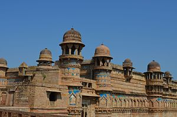
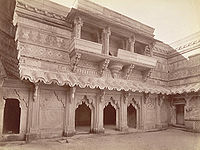
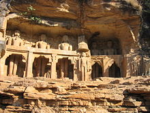
 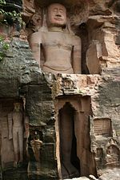
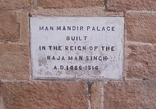
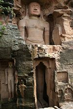
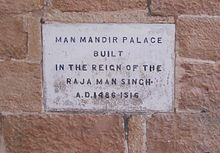
 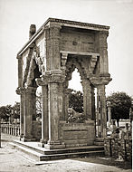
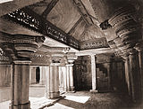
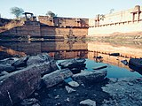
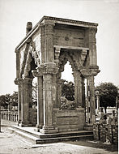
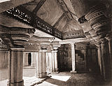
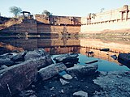
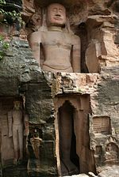
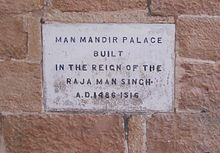
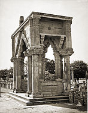
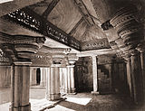
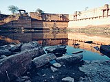
Developed By: Vineet Choudhary